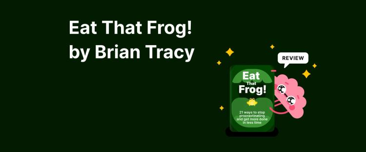

Library › Productivity
Eat That Frog! — Summary & Key Lessons

21 ways to stop procrastinating — if you must eat a frog, do it first thing in the morning, and if there are two, eat the ugliest first.
📖 OPEN THE FULL INTERACTIVE BREAKDOWN →🌐 Read it in Hindi, Hinglish, Gujarati, Tamil & 22 more languages — free, with audio.
💡 The Big Idea
Tracy's premise is Mark Twain's joke turned operating system: if the first thing you do each morning is eat a live frog, nothing worse can happen all day. Your frog is the task with the greatest positive impact on your life — and precisely the one you avoid. The book's 21 methods orbit a few laws: clarity is the master skill (goals in writing, plans on paper), the 80/20 rule ruthlessly applied (two of your ten tasks are worth more than the other eight combined), consequences define importance (long-term impact is the only real priority test), and disciplined sequencing — ABCDE, three questions, single-handling — beats every productivity app. There is never enough time for everything, but there is always enough time for the most important thing.
🧠 The 6 Key Lessons
Lesson 1: Set the Table: Clarity Is the Master Skill
Chapters 1–2: Set the Table / Plan Every Day in Advance
The deepest cause of procrastination is vagueness: you cannot eat a frog you haven't identified. Tracy's foundation: decide exactly what you want in each area, WRITE it down (a goal not in writing is a wish — writing engages different neurology and makes the goal reviewable), set deadlines, list every step, organize the list into a plan, and act on it daily. Then the 6-P formula: Proper Prior Planning Prevents Poor Performance — every minute planning saves ten executing, yet most people won't spend ten minutes planning a day they'll spend ten hours living. The daily mechanics: write tomorrow's list tonight (the subconscious works on it while you sleep), plan weekly and monthly lists, and let the 10/90 rule pay you: the first 10% of time spent organizing buys back 90% of the chaos.
📖 Example: Tracy's recurring study citation: the tiny fraction of adults with clear, WRITTEN goals accomplish multiples of what equally talented people achieve without them — his famous framing of Harvard/Yale lore aside, the mechanism is observable in any sales floor:… Read the full example →
⚡ Do this: Tonight, write tomorrow's complete list before closing the laptop. This weekend, do the full table-setting: written goals per life area, deadlines, steps, sequence. Ten minutes nightly, forever.
Lesson 2: 80/20 and the Consequence Test
Chapters 3–5: Apply 80/20 / Consider the Consequences / Practice Creative Procrastination
Of ten tasks on your list, two will be worth more than the other eight combined — and the valuable two are almost always the complex, frog-shaped ones, while the trivial eight are pleasant and quick (which is why busy people accomplish nothing: they're diligently eating tadpoles). The sorting blade is CONSEQUENCES: something is important exactly in proportion to its long-term impact — ask 'what happens if I do/don't do this in five years?' and priorities self-declare. The companion skill is creative procrastination: since you can't do everything, deliberately procrastinate on the low-value majority — say no early, often, and cheerfully to tadpoles, so the frogs get your best hours. Most people procrastinate on the vital few and perform the trivial many; inverting that ratio is the entire game.
📖 Example: Tracy's law-of-three exercise, run with thousands of executives: list everything you do in a month (often 20–30 items), then answer three times — 'if I could only do ONE thing all day, which adds the most value?' Three answers emerge, and they reliably… Read the full example →
⚡ Do this: Run the law of three on your job this week: full task inventory, then the one-thing question asked three times. Calculate honestly what % of yesterday went to those three. Then pick two tadpole categories to creatively procrastinate on — permanently.
Lesson 3: ABCDE, Single-Handling & the Deadline Sprint
Chapters 6–12: ABCDE Method / Key Result Areas / Single-Handle Every Task
The execution stack: label every task A (serious consequences), B (mild consequences — never do a B while an A remains), C (pleasant, no consequences), D (delegate everything possible), E (eliminate). Within A's, rank A-1, A-2, A-3 — and A-1 is, by definition, your frog. Then SINGLE-HANDLE it: start your A-1 and work without diversion until 100% complete — restarting a task after switching costs up to five times the total time, so the 'quick check' of email mid-frog is arithmetic vandalism. Supporting rituals: prepare everything the night before (a cleared desk with the frog materials laid out removes every excuse), work from your Key Result Areas (the 5–7 outputs you're actually paid for — grade yourself honestly on each; your weakest KRA sets the ceiling on your whole career), and upgrade skills relentlessly in your frog domain: much procrastination is disguised incompetence, and mastery makes frogs taste better.
📖 Example: Tracy's single-handling math is the punchline executives remember: a task requiring 60 focused minutes, done in start-stop fragments across a distracted day, consumes up to five hours of cumulative restart time — five-to-one is the tax rate on… Read the full example →
⚡ Do this: Tomorrow morning: ABCDE the list, circle A-1, lay out its materials tonight, and single-handle it to completion before opening email. This month: grade your KRAs 1–10 and enroll in fixing the lowest score.
Lesson 4: Slice the Frog: Beating the Overwhelm
Chapters 17–20: Salami Slice / Swiss Cheese / Develop a Sense of Urgency
Big frogs paralyze; Tracy's cutlery: SALAMI-SLICE the task (list every small step, commit to just one slice — completion psychology takes over, because finished units release energy and the 'urge to closure' pulls you to the next slice) or SWISS-CHEESE it (punch 5–15 minute holes in the task anywhere, anytime — momentum accumulates until the frog collapses). Fuel both with the deadline effect: work as if you had to leave town tomorrow, create artificial deadlines with stakes, and cultivate a sense of urgency — the rare trait that, combined with competence, makes careers: 'do it now' as reflex. Underneath is Tracy's motivational engine: optimism (talk to yourself positively — 'I like myself and I love my work' before the frog), and the momentum principle: getting started is 80% of the battle; the law of inertia serves whoever moves first.
📖 Example: The writing demonstration Tracy loves: authors paralyzed by 'a book' who commit to one page a day — 365 pages a year, book done, by salami alone. His urgency exhibit: two equally skilled employees, one with 'do it now' wiring — within two years the fast one… Read the full example →
⚡ Do this: Take your scariest current frog and salami-slice it into 15-minute pieces on paper. Do slice one immediately after reading this. Then manufacture a deadline with teeth: a public commitment, a booked meeting, or money staked on the date.
Lesson 5: The Ugliest Frog First: Win the Morning, Win the Day
Part 1: The Morning Advantage
The one habit that separates high performers is doing the hardest task before anything else — before emails, before phone calls, before the day steals your energy. Your willpower is highest in the first hours after waking, which makes that the only time the 'ugliest frog' is actually manageable. Tracy calls this 'eating the frog first': complete the task you most dread while your mind is fresh, and the rest of the day feels like a downhill ride. Every decision you postpone in the morning gets heavier by the afternoon. The book's bluntest rule: if you have to eat two frogs, eat the ugliest one first — and don't sit there looking at it.
📖 Example: Tracy describes how top salespeople make their most difficult prospecting calls at 9am, not after lunch. The ones who 'warm up' with easy tasks consistently underperform, because easy tasks consume the exact willpower the hard task needed. Morning frogs… Read the full example →
⚡ Do this: Tonight, write tomorrow's one ugliest task on a sticky note. Tomorrow, do it before opening your inbox — no exceptions, no phone first.
Lesson 6: Creative Procrastination: Choose What NOT to Do
Part 3: The Discipline of Selection
Since you cannot do everything, the key skill is deciding what to deliberately NOT do — Tracy calls it creative procrastination. Most people procrastinate on important things and then feel guilty; the productive version procrastinates on low-value tasks on purpose, forever. Every task has a hidden 'potential value' — some contribute 10x more to your goals than others. The discipline is to look at your list and consciously delay or drop the 80% of tasks that deliver almost nothing, so the 20% that matters gets your full energy. Creative procrastination is not laziness; it is strategy wearing the mask of skipping.
📖 Example: Tracy points to executives who answer every email 'to be nice' and then have no time for the strategic work they were hired to do. The ones promoted instead let unimportant requests sit, delegate them, or simply say no — and their 20% work speaks so loudly… Read the full example →
⚡ Do this: Review your to-do list and mark every task that contributes less than 5% to your top goal. Delete or postpone all of them — deliberately, without guilt.
✅ 5-Step Action Plan
- Write tomorrow's list tonight — every night, forever.
- Run the law of three; creatively procrastinate on two tadpole categories.
- ABCDE daily; single-handle A-1 before email, materials prepped the night before.
- Grade your KRAs; fix the weakest this quarter.
- Salami-slice the scariest frog and eat slice one today.
⚠️ When This Doesn't Work
Eat the biggest, ugliest task first — but only if the biggest task is the RIGHT task. Ford ate the Edsel frog every morning for years: it was the company's most important, hardest project, executed with total focus — and it was a $250 million failure because the market never wanted it. Frog-eating optimises order, not direction. Before you eat the frog, ask if the frog is worth eating. Doing the wrong thing efficiently is still wrong.
💀 The Graveyard Proves It
🚗 Ford Edsel — The $250M Car Nobody Asked For. Burn: $250M (≈ $2.5B today). Read the full case study →
💬 Best Quotes from Eat That Frog!
- “If you have to eat two frogs, eat the ugliest one first.”
- “One of the very worst uses of time is to do something very well that need not be done at all.”
- “Every minute spent in planning saves as many as ten minutes in execution.”
Interactive version: mark lessons as read, listen in your language, share quote cards.